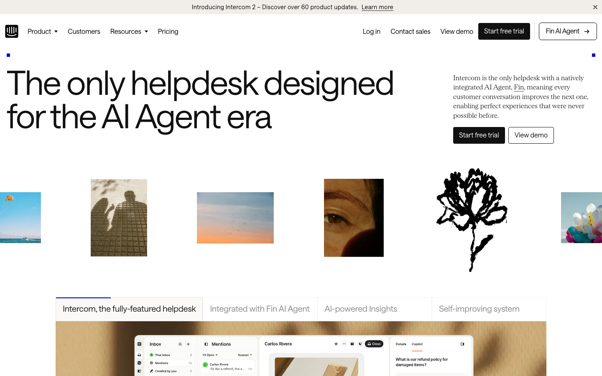
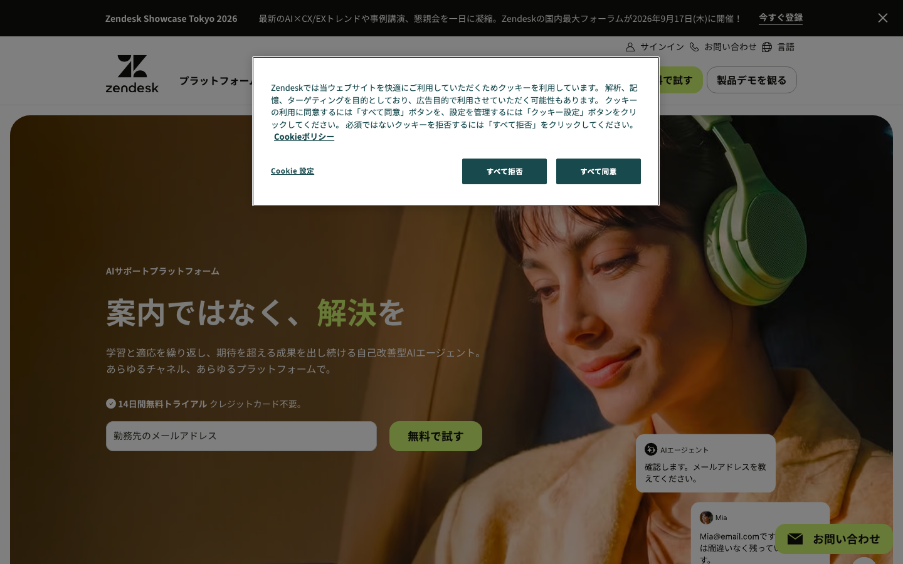
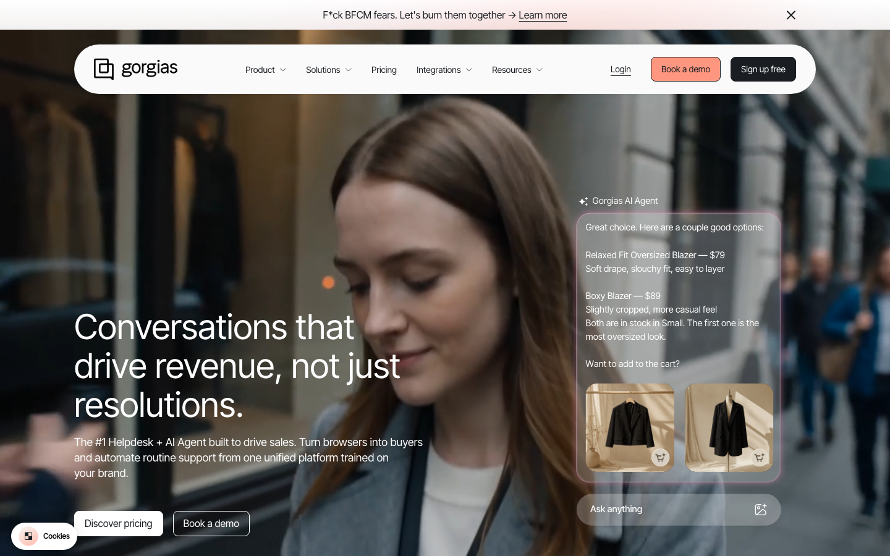
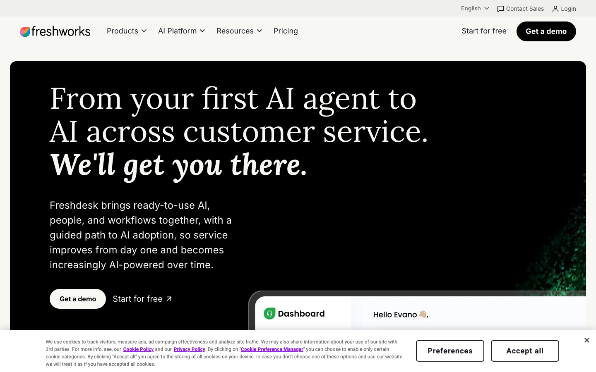

AI CUSTOMER SUPPORT / 比較ガイド
AIカスタマーサポート比較｜Intercom Fin・Zendesk AI・Gorgias AI Agent・Freshdesk Freddy AI【2026年】
AIサポートは、席数で払うのか、解決した問い合わせで払うのか、セッションで払うのかによって総額が変わります。公式の課金単位と国内外レビューを分け、問い合わせ業務に合うサービスを本文の前に判断できるようにしました。
- 既存ヘルプデスク：Intercom Fin。0.99ドル/解決 outcome、既存ヘルプデスク利用時は席数なしの構成があります。問い合わせを解決した分だけ支払いたい場合に向きます。
- 大規模・多チャネル：Zendesk AI。Suite Teamは年払い月55ドル/エージェント。AIエージェントはプランに含まれ、automated resolutionが利用単位です。
- Shopify・EC：Gorgias AI Agent。多くのプランで0.90ドル/解決 interaction、90〜2,500件超の枠。EC外の複雑な問い合わせには向きません。
- 低い席単価：Freshdesk Freddy AI。Growthは年払い月19ドル/エージェントで500 sessions込み。追加は49ドル/100 sessionsです。
料金・usage・コスパ比較（2026年8月2日時点）
価格は公式の米ドル表示です。月間問い合わせ1,000件、担当者3人の小規模チームを想定し、席数・解決件数・セッションを同じ表に並べます。AIが答えきれず人へ引き継いだケースの扱いもコスパを左右します。
比較シナリオ：月1,000件のうち40%が定型質問で、AIが400件を解決すると仮定します。席課金型は3席の基本料金、従量型は400件分を足して、おおよその月額を読み取ります。
| サービス（公式） | 代表プラン・月額 | 含まれるusage | 実効コスト | コスパの結論 |
|---|---|---|---|---|
| Intercom Fin | Fin $0.99/解決 outcome。既存ヘルプデスク利用は席数なし | 最低50 outcomesの例。Intercom本体はEssential/Advanced/Expertの席課金 | 400件解決なら約$396/月（既存ヘルプデスク構成） | 既存基盤を残してAIだけ足す場合に明快。解決件数が増えると従量費も増える |
| Zendesk AI | Suite Team $55/エージェント/月（年払い） | AIエージェント込み。3席で月$165、automated resolutionの利用量が加わる | 基本は約$165/月＋利用量。単価は契約・プランで変わる | 多チャネルと分析をまとめるなら強い。小規模には機能が余りやすい |
| Gorgias AI Agent | AI $0.90/解決 interaction（多くのプラン）＋Helpdesk | 90〜2,500件超の自動化枠。席課金なし、Helpdeskはチケット量で選択 | 400件解決ならAI部分約$360/月＋Helpdesk料金 | 注文・配送・返品が多いECは解決単価を読みやすい |
| Freshdesk Freddy AI | Growth $19/エージェント/月（年払い） | 3席で$57/月、Freddy AI Agent 500 sessions込み。追加$49/100 sessions | 500 sessions以内なら約$57/月。超過は100件ごとに$49 | 低い固定費で始めやすい。大量の解決件数は追加sessionsを見積もる |
Intercom FinとGorgiasは解決件数、Freshdeskはセッション、Zendeskは席数とautomated resolutionが中心です。400件の解決だけを見ると従量型が高く見えることがありますが、人手の一次対応・多チャネル・CRM連携を別に買う費用まで含めて比べます。
4サービスの実力と口コミ

Intercom Fin：既存ヘルプデスクへAIを追加
Intercom公式は、Finを既存ヘルプデスクでも使え、解決したoutcomeだけに課金すると説明しています。G2ではInboxと自動化の一体感が評価される一方、Redditでは回答の調整やナレッジ整備に手間がかかるという声があります。今の窓口を残しながら定型質問だけAIへ渡したい会社に向きます。

Zendesk AI：多チャネルと大規模運用
Zendeskはチケット・チャット・音声・ナレッジを一つのサポート基盤へまとめ、AIエージェントの自動解決を測定します。G2の解説ではカスタマイズ性と分析が評価され、TechRadarはverified resolutionの課金方式を紹介しています。Redditでは設定項目の多さが話題になるため、窓口が多く運用担当がいる会社ほどコスパが出ます。

Gorgias AI Agent：Shopify中心のECサポート
Gorgias公式は、AI Agentを解決interaction課金とし、Helpdeskはチケット量で選べると説明しています。G2とCapterraではShopify・SNS・注文情報を一つのInboxで扱える点が好評です。Redditでは、返品・配送・注文状況の自動化には強いが、EC外の専門的な問い合わせではナレッジ設計が必要という傾向があります。

Freshdesk Freddy AI：低い席単価で始める
Freshworks公式は、GrowthにもFreddy AI Agentの500 sessionsを含め、追加を100 sessions単位で販売しています。独立レビューでは低い席単価とチケット管理が評価されます。一方、多言語、分析、Copilotなどの高度機能は上位プランや追加料金に寄るため、少人数のメールサポートから段階的に広げる会社で強みが出ます。
強み・弱み比較表
| サービス | 強み | 弱み | 向く人 | 向かない人 |
|---|---|---|---|---|
| Intercom Fin | 既存ヘルプデスク、解決outcome課金、Inbox | 回答調整、従量費、ナレッジ整備 | 今の窓口へAIを追加したい会社 | 新しい基盤をゼロから大規模構築したい会社 |
| Zendesk AI | 多チャネル、権限、分析、拡張 | 席単価、設定量、機能の多さ | 複数ブランド・大規模サポート | 少人数で一つのFAQだけ答えたい人 |
| Gorgias AI Agent | Shopify、注文・返品、解決単価 | EC外の専門質問、Helpdesk料金が別 | EC・D2Cのサポート担当 | 製造や金融など複雑なケース中心の組織 |
| Freshdesk Freddy AI | 低い席単価、500 sessions込み、拡張 | 上位機能の追加費、sessions管理 | 少人数のメール・チケット窓口 | 最初から多チャネルを高度に統合したい会社 |
用途別の決定ルール
Intercom Fin
現在のヘルプデスクを残し、定型質問の解決だけ増やすなら第一候補です。
Zendesk AI
メール・チャット・音声・ナレッジを一つの運用基盤で管理するなら強いです。
Gorgias
注文・配送・返品をShopifyデータと結び、解決件数で管理します。
Freshdesk
3席と500 sessionsから始め、問い合わせ量に合わせて拡張します。
向かない条件も明確です。既存ヘルプデスクを変えたくないならFin、運用基盤を一本化したいならZendesk、ECデータが中心ならGorgias、固定費を抑えたパイロットならFreshdeskを選びます。
自社の業務へ最短経路で組み込む
AIサポートの成果は、FAQの量よりも、問い合わせ分類・CRM情報・人へ引き継ぐ条件・解決後の更新を一つの業務にできるかで決まります。AI顧問室は、課金単位と問い合わせ量を整理し、選んだサービスを実際の顧客対応へ組み込む設計まで支援します。
- Intercom料金 / G2 / Reddit傾向
- Zendesk料金 / G2解説 / TechRadar
- Gorgias料金 / G2 / Capterra
- Freshdesk料金 / 独立レビュー / TechRadar
価格・利用量・レビューは2026年8月2日に取得しました。
よくある質問
無料で始めるならどれですか？
Intercomは14日トライアル、Zendeskは14日トライアル、Freshdeskは無料トライアルがあります。既存の問い合わせを活用したいならFin、低い席単価で試すならFreshdeskが判断しやすいです。
課金単位の違いを一言でいうと？
IntercomとGorgiasはAIが解決した件数、FreshdeskはAIが処理したsessions、Zendeskはエージェント席数とautomated resolutionです。月間件数と担当者数を先に並べると比較できます。
AI顧問室では何をしてくれますか？
問い合わせ分類、FAQ、CRM連携、担当者の引き継ぎ条件を整理し、サービス選定から顧客対応への組み込みまで支援します。